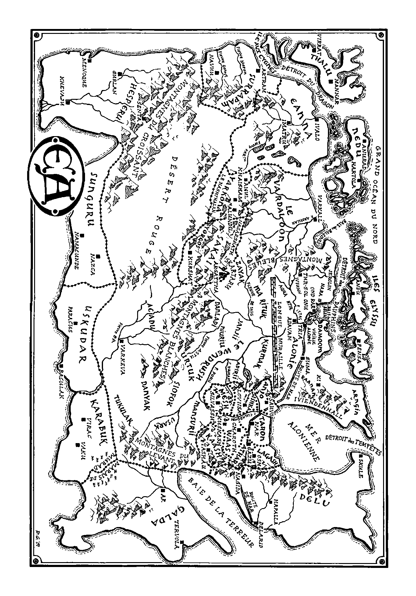
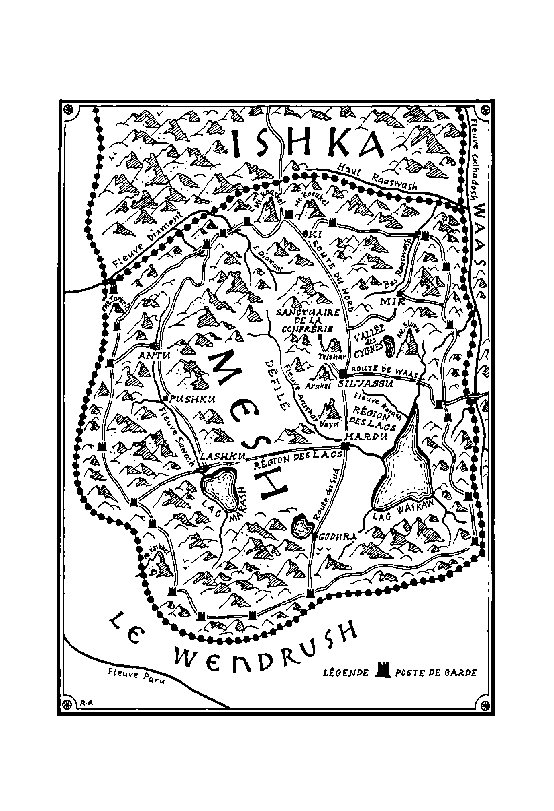

01
Nous passâmes la plus grande partie du lendemain à marcher dans les grands bois pour rejoindre le bateau. Sur la plage, devant les eaux du lac qui clapotaient sur le sable grossier, nous nous séparâmes de Ninana, d’Aunai et de plusieurs dizaines de Lokilani venus nous accompagner. Après avoir mis le bateau à l’eau, nous nous dirigeâmes droit vers la brume, poussés par un bon vent. Quand nous atteignîmes le mur de nuages froids et gris, nous fûmes pris dans un courant rapide qui nous emporta loin de l’île. Tirant de toutes nos forces sur les rames, nous avancions à toute allure, peu désireux de passer trop de temps dans cette nappe humide et aveuglante. Moins d’un mille plus tard, nous sembla-t-il, nous débouchâmes du brouillard au soleil d’une chaude journée d’été. Il ne nous fallut pas longtemps pour rejoindre le rivage nord du lac et retrouver le petit village des Gratte-terre.
Tembom fut très heureux de nous revoir car il pensait son bateau perdu – et nous aussi par la même occasion. Baltasar et les Gardiens, ainsi que Karimah et les Manslayers, nous accueillirent sur la rive. Quel plaisir de retrouver mes hommes alignés sur leurs grands destriers ! Les diamants de leurs armures, étincelants sous le soleil, brillaient presque autant que les Timpums de l’île entourée de brume de l’autre côté du lac.
« Baltasar ! m’écriai-je en saluant mon ami. Sunjay ! Lord Harsha ! Lord Raasharu ! »
Skyshan de Ki tenait les rênes de mon cheval et je fus tout aussi heureux de retrouver Altaru. Montant sur son dos, je dis à Baltasar : « Vous semblez prêts à partir.
— Nous le sommes, répondit-il. Dès que nous avons aperçu votre bateau, nous avons levé le camp en pensant qu’après tout ce retard vous voudriez partir aussi vite que possible. »
Sa voix rauque indiquait qu’il avait craint que nous ne revenions pas et le visage des Gardiens révélait la même inquiétude. Mais si la retenue des Valari leur interdisait d’exprimer leurs angoisses, il n’en allait pas de même pour les guerriers sarni.
« Atara ! » lança une voix forte. Au moment où Atara débarquait, Karimah et plusieurs autres Manslayers sautèrent au bas de leurs montures. Karimah se précipita pour embrasser Atara et se mit à pleurer et à parler en même temps en gémissant : « Cela fait quatre jours que vous êtes partis ! Je croyais que vous étiez morts. Tout le monde le croyait. Qu’est-ce qui vous a retenus, ma chérie ? »
Atara ne dit rien des Lokilani et parla très peu des merveilles que recelaient leurs bois. Mieux valait ne pas inciter les Sarni, Tembom, ni même les Gratte-terre qui nous observaient eux aussi, à risquer leur vie pour aller chercher un trésor sur l’île. Cependant, Atara reconnut que notre quête avait été couronnée de succès.
« Une grande pierre de la pensée avait été cachée dans l’île il y a très longtemps. Nous l’avons retrouvée avec l’aide de la Pierre de Lumière. »
Je sortis alors le cristal akashic afin que tout le monde puisse le voir. Flick tournoyait au-dessus du petit disque et tous les spectateurs regardèrent, abasourdis, le glorre effectuer des allers-retours entre sa silhouette et la gelstei.
« Mais qu’est-ce que c’est ! s’écria Baltasar en s’émerveillant devant cette nouvelle couleur. Vous avez des choses à nous raconter, Lord Valashu.
— En effet », répondis-je. Je levai les yeux pour regarder derrière lui et les autres chevaliers les Manslayers qui nous observaient, rassemblées sur leurs chevaux de l’autre côté d’un petit chemin de terre. Leurs bras nus étaient ornés de bracelets en or brillant et leurs visages hâlés par le soleil exprimaient le désir - difficile cependant de dire si ce désir s’adressait à mes hommes ou à autre chose. « Et j’espère que de votre côté, vous n’avez rien à raconter. »
Baltasar éprouva un certain trouble en jetant un coup d’œil à une jolie femme appelée Chinira qui le dévisageait avec assurance. « Nous avons maintenu la paix, comme vous l’aviez ordonné, dit-il. Mais il est bon que vous soyez de retour. »
Nous n’étions pas les seuls à retrouver nos compagnons car la veille, Sar Sharath et Sar Manashu étaient arrivés avec les chevaliers que nous avions laissés derrière nous après la bataille. Les quatre blessés étaient suffisamment remis pour monter à cheval, ce qui était une bonne chose car il restait encore de nombreux milles à parcourir entre le lac brumeux et Tria.
En dépit de l’heure tardive, nous prîmes la route l’après-midi même. Quittant le village des Gratte-terre sans un regard derrière elles, Karimah et les Manslayers s’éloignèrent vers l’ouest. Je restai juste assez longtemps pour remercier Tembom de nous avoir loué son bateau et ses amis pour les miches de pain de rushk qu’ils nous avaient généreusement données.
C’était une chaude journée pour voyager. Dans l’air étouffant, Maram s’affaissa presque immédiatement sur sa selle et s’assoupit. Je m’approchai de lui et le réveillai d’un petit coup de coude dans les côtes. « Tu aurais dû dormir un peu plus la nuit dernière.
— J’aurais dû dormir tout court. Mais Akia m’en a empêché.
— Et qui est Akia ?
— Qui est Akia ? dit-il. Tu ne m’as pas vu danser avec elle ? La fille aux lèvres de miel et aux seins dressés vers les étoiles ? Eh bien, je lui avais promis de la retrouver pour danser toute la nuit sous les étoiles, si tu vois ce que je veux dire.
— Je vois très bien, oui », répliquai-je en me tournant pour jeter un coup d’œil vers Lord Harsha et Béhira qui chevauchaient en queue de colonne avec les chevaliers blessés. Puis j’ajoutai : « Tu vas bien ? D’habitude, tu ne te plains pas du sommeil perdu à t’adonner à tes petits duos nocturnes.
— C’est vrai. Mais apparemment, Akia m’a pris au mot : tout ce qu’elle voulait, c’était danser, si tu vois ce que je veux dire – dommage. »
Je lui dis de fermer les yeux et de méditer parce que la journée allait être longue et qu’il avait raté l’occasion de se reposer vraiment.
« Méditer ? Sur quoi ? Sur le déclin de mes talents de séducteur ? Je suis en train de perdre mon charme, je le sais. »
Balayant du regard la prairie à l’ouest, je lui répondis :
« Reprends-toi, vieux. Le lion, lui, chasse cinq antilopes et il s’estime heureux quand il en attrape une.
— Oui, et les vieux lions perdent leurs dents et meurent de faim. Je vieillis. Je le sens dans mes os.
— Mais tu n’as que vingt-cinq ans !
— J’en aurai vingt-six le mois prochain. Non, non, il est temps que je change de vie. J’ai décidé d’épouser Béhira. Je l’annoncerai à Tria quand tu auras revendiqué la Pierre de Lumière et que tu te seras déclaré.
— Ça, ça dépend de ce que maître Juwain trouvera dans le cristal de la mémoire.
— Même s’il n’y a rien dedans, tu seras obligé de prendre une décision, et vite. Tu ne peux pas éluder ton destin, pas plus que je ne peux repousser le mien. »
Je réfléchis à ce qu’il venait de dire en longeant le rivage du lac, puis en suivant la rivière qui en sortait. Nous nous maintenions au nord de ses méandres qui serpentaient dans la steppe brûlée par le soleil comme un ruban bleu bordé de vert. Les peupliers argentés aux feuilles scintillantes que j’avais toujours trouvé magnifiques me paraissaient ternes comparés aux grands chênes et aux astors de l’île des Lokilani. Et les herbes jaunes du Wendrush semblaient presque mortes. Je me rappelai le paysage encore plus rude de Yarkona et le grand désert qui s’étendait, disait-on, au sud. Le Dragon Rouge exporterait-il le feu de la guerre vers l’est pour faire de tout Ea une terre désolée et calcinée ? me demandai-je. Ou la paix l’emporterait-elle, permettant à la terre de redevenir verte ? Parcourant du regard le terrain aux teintes fauves autour de nous, je serrais le sac de graines que m’avait donné Ninana en rêvant d’un monde nouveau.
Pourtant, me disais-je, ce monde-ci avait encore une certaine beauté. Et les plaines du Wendrush regorgeaient encore de vie. Les Manslayers qui nous précédaient paraissaient l’apprécier d’une manière qui nous était étrangère, à nous, hommes des Montagnes du Levant. J’essayai de contempler cette terre austère avec leurs yeux et de sentir le vent avec leurs corps. Et quand j’y parvins, ses herbes desséchées m’apparurent moins comme un paysage désolé que comme un grand bouclier doré s’étendant dans toutes les directions pour rejoindre le ciel bleu. Des criquets stridulant et d’innombrables insectes s’y trouvaient chez eux et les chiens de prairie y construisaient leurs villages de buttes et guettaient devant leurs galeries les faucons, les loups et les autres prédateurs. Nous dépassâmes de grands troupeaux d’antilopes et de sagosks qui prenaient autant de plaisir à manger de l’herbe qu’un homme à déguster un festin. Les hautes herbes ondoyantes dissimulaient également des troupes de lions avec leurs manteaux fauves et leurs yeux jaune-vert. On avait l’impression qu’ils pouvaient être des milliers tapis à nous attendre. Maram craignait ces bêtes féroces et certains de mes hommes aussi, même les chevaliers qui arboraient un lion en meuble sur leur bouclier. Mais Atara et les Manslayers leur accordaient moins d’attention qu’aux mouches voraces qui arrachaient la peau et faisaient saigner les chevaux. Leur méfiance allait plutôt aux paysages vallonnés qu’elles scrutaient à la recherche de traces d’ennemis.
Dans cette partie du Wendrush, ces ennemis étaient principalement des Janjii qui faisaient parfois des incursions à l’est du Poru et quelques bandes de Kurmaks isolés qui ne s’étaient pas alliés à Sajagax et n’aimaient pas beaucoup les guerrières de la Société des Manslayers. Cependant nous n’en rencontrâmes aucun au cours de cette journée, ni aucun autre être humain d’ailleurs. Ce soir-là, nous installâmes notre camp près de la rivière et les Manslayers nous regardèrent, amusées, protéger nos rangées de tentes avec un fossé et une barricade de branches de peuplier. En cas d’attaque au milieu de la nuit, leur stratégie était différente de la nôtre : elles se contenteraient d’enfourcher leur cheval sur-le-champ pour s’enfuir dans l’obscurité de la steppe. Ou encore, si la lumière de la lune et des étoiles le permettait, elles manœuvreraient dans l’herbe pour livrer des duels à l’arc ou des corps à corps et des combats au sabre si tout le reste échouait.
Le lendemain, nous partîmes de bonne heure. Nous nous dirigions vers l’ouest à bonne allure, mais pas trop vite pour ne pas fatiguer davantage les guerriers blessés. J’avais donné la Pierre de Lumière à Sar Marjay et le cristal akashic à maître Juwain. Ce dernier passait des heures à fouiller ses informations incompréhensibles et des heures à tenter de les comprendre avec un papier et un crayon. Pendant le repas de midi, composé de pain de rushk sucré aux noisettes et d’antilope rôtie, je l’entendis répéter des mots d’un autre monde et marmonner à moitié pour moi et à moitié pour lui : « Voyons, nous avons valaha, la racine doit être val, ce qui pourrait signifier étoile comme en ardik ou dans notre langue à nous. Ensuite, il y a arda. Le feu, peut-être, ou le cœur ou encore l’âme. Ou peut-être les trois. Et avec halla et alhalla, nous avons une association de mots qui… » Et ainsi de suite. Maître Juwain découvrait des significations et gribouillait des possibilités dans son journal. J’essayais de me rappeler d’autres paroles du chant de mort d’Alphanderry et maître Juwain s’emparait de chaque mot qui me revenait comme s’il s’agissait d’un bijou précieux.
En fin d’après-midi, nous atteignîmes le confluent du Serpent et du Poru. Mes compagnons et moi avions traversé ce fleuve puissant à la nage l’année précédente, mais au mois de valte et plus au sud, à un endroit où il était un peu plus étroit. Là, gonflé par les abondantes eaux d’été du Serpent et du Diamant, le Poru formait au milieu de la steppe un large ruban marron au courant impétueux. Nous décidâmes de monter notre camp à l’endroit même où les eaux bleues du Serpent se jetaient dedans. Ce serait la dernière nuit où nous pourrions tirer et boire de l’eau claire. Les Sarni, dit-on, aiment le goût du Poru et prennent des forces dans cette Mère des Fleuves. Mais pour mes hommes et pour moi, la perspective de tremper nos marmites et nos chopes dans ces flots troubles était aussi engageante que l’idée de boire de la boue.
Les trois jours suivants, nous longeâmes le cours du Poru vers l’ouest avant de prendre petit à petit vers le nord. À l’exception des orages de l’après-midi, où le ciel zébré d’éclairs déversait sur nous des torrents de pluie, nous eûmes beau temps. Et en dépit du malaise que ressentaient nombre de chevaliers valari dans le Wendrush, c’était un endroit agréable à traverser. L’herbe était souple sous les sabots des chevaux et il y avait peu de pierres et encore moins de collines à escalader. De plus, les chevaux n’avaient aucun mal à reconstituer leurs forces car tout le fourrage dont ils avaient besoin poussait dans la terre noire au-dessous d’eux. L’herbe riche et chargée de graines les nourrissait et nous dispensait de l’obligation de transporter de l’avoine et d’autres céréales. C’était l’une des raisons pour lesquelles les armées sarni pouvaient couvrir rapidement de grandes distances : elles n’avaient pas besoin de s’encombrer de tout un équipement pour partir à la guerre.
Pendant cette partie du voyage, les Manslayers restèrent entre elles et Atara passa la plupart du temps avec ses sœurs guerrières. Quelquefois cependant, il lui arrivait de chevaucher à nos côtés pour venir voir Maram ou maître Juwain, faire connaissance avec Béhira et bavarder gaiement avec Estrella. Dans ces moments-là, elle semblait chaleureuse et heureuse de vivre et se réjouissait d’entendre le chant des sturnelles et de sentir le soleil sur son visage. Mais quand elle s’adressait à moi, elle se raidissait et retrouvait sa froideur. Elle s’en tenait à de brefs échanges limités aux affaires courantes. C’est ainsi qu’alors que nous approchions du campement d’été de Sajagax, elle expliqua pourquoi son grand-père avait choisi cet endroit sur le Poru, à l’extrémité nord-est des terres des Kurmaks : « Il y a de l’eau pour les chevaux et les troupeaux, même si vous, Valari, êtes trop purs pour la boire. Et puis il y a de nombreux Janjii juste de l’autre côté du fleuve, et au-delà de leur territoire, à seulement cinquante milles, se trouvent les Marituks. Sajagax aime avoir ses ennemis à proximité.
— L’Alonie aussi ? » demandai-je.
Atara eut un sourire triste car elle devait la vie au souhait de Sajagax de cimenter une alliance avec l’Alonie en mariant sa fille au roi Kiritan. « Disons simplement que si Sajagax ne considère plus mon père comme un ennemi, il n’en va pas de même pour tous ses ducs.
— Et les Adirii ? Nous sommes loin de leurs terres.
— Oui, mais cela fait de nombreuses années que nous sommes en paix. Si d’autres hommes comme ceux qui ont failli vous massacrer rompaient la trêve et traversaient le Serpent en force, Sajagax se dirigerait vers le sud pour les anéantir. »
J’étais impatient de rencontrer ce grand combattant connu dans tout Ea pour ses exploits guerriers. Nous atteignîmes son campement le soir, quatre jours après avoir quitté le lac des Lokilani. En réalité, le vaste rassemblement d’hommes, d’animaux et d’habitations répartis le long des rives est du Poru faisait plutôt penser à une ville mobile. Des enclos contenant des animaux – des chevaux, des moutons, des chèvres et des sagosks mugissants – formaient une barrière de plusieurs milles de long au nord, à l’est et au sud. À un mille de distance, on respirait l’odeur de ces milliers d’animaux et de leurs excréments abandonnés sur le sol. On sentait aussi les zones d’abattage près desquelles les femmes sarni étaient occupées à enfiler des morceaux de carcasse couverts de mouches sur des broches et à fumer des lanières de viande sur des feux odorants. Plus près du fleuve, il y avait de nombreuses échoppes en plein air dans lesquelles les Sarni tannaient le cuir, façonnaient des arcs et fabriquaient des pointes de flèches, des sabres et des clous pour leurs armures en battant du fer chauffé au rouge. Le centre de la ville était réservé aux habitations. Des centaines de rangées de tentes séparées par des rues en terre battue étaient alignées aussi régulièrement que dans n’importe quel camp valari. Mais ces tentes étaient beaucoup plus grandes, circulaires, et posées sur des armatures en bois. Les Sarni les recouvraient de feutre épais fabriqué soit avec de la laine de mouton, soit avec les longs poils doux du sagosk.
Certaines tentes étaient encore plus grandes et tissées dans une matière encore plus fine. C’étaient celles des capitaines de Sajagax. La plus grande de toutes, au centre de la ville, appartenait à Sajagax en personne. C’était un énorme dôme de soie capitonnée qui faisait penser à un palais.
Aucun garde ne nous empêcha de pénétrer dans la ville. Les Sarni forment le plus libre des Peuples Libres – en tout cas ils aiment à se revendiquer comme tels –, et ils ne s’abaissent pas à interdire à un guerrier d’entrer chez eux. Ils ne s’inquiétèrent même pas à la vue de cent soixante-treize chevaliers valari en tenue de combat, aussi inouïe que notre arrivée ait pu leur paraître. Sajagax était capable de rallier sur-le-champ cinq mille combattants à son étendard. Et puis la nouvelle de notre traversée des terres kurmaks nous avait précédés. En effet, les cavaliers de Sajagax nous avaient suivis à la trace depuis que nous avions quitté le lac. Les Sarni s’étaient donc préparés à recevoir leurs plus anciens ennemis, non pas avec des arcs et des flèches, mais avec assez de vin, de bière et de viandes rôties pour faire un grand festin.
Tandis que nous remontions les rues poussiéreuses bordées d’hommes, de femmes et d’enfants impatients de nous apercevoir, Atara se laissa distancer pour rester avec moi. Avec sa cape en peau de lion et son bandeau blanc, elle avait fière allure : la grande guerrière imakla qui avait perdu la vue et qui y voyait encore. De sa voix claire, elle saluait les guerriers kurmaks qu’elle connaissait depuis des années en les appelant par leur nom : « Tiagax, Orox, Turkalak ! » Et les femmes aussi : « Ghita, Tyraya, Sarakah ! » Il fallait bien reconnaître que ces gens étaient très beaux : grands, les membres déliés et robustes, avec de longs cheveux blonds et des yeux qui luisaient comme des pierres précieuses bleues ou vertes. Presque tous pouvaient se targuer de descendre de Sarnjin Marshan, fils de Bohimir le Grand, ce seigneur de guerre aryen qui avait pris la mer à Thalu à la fin de l’Âge de la Mère pour aller conquérir la majeure partie d’Ea. C’était un peuple de gens orgueilleux, aussi honnêtes et ouverts qu’ils étaient brutaux. Ils désignaient les étrangers par le terme kradak, ce qui signifiait tout simplement « ennemi ». Leurs yeux nous mitraillaient comme des centaines de flèches à la pointe d’acier. On avait l’impression qu’ils nous auraient bien mis à rôtir sur leurs feux à la place des selles de sagosk ou d’agneau.
Quand nous fûmes plus près du centre de cette ville barbare, Atara nous montra les tentes abritant le trésor et l’armurerie ainsi que celles des concubines et des principales épouses de Sajagax. Nous arrivâmes à celle de Sajagax. L’extérieur était tendu de peaux de lion tandis que l’intérieur, comme je devais bientôt le découvrir, était décoré de zibeline, d’hermine et de feuilles d’or battu. Le grand chef kurmak nous attendait devant les portes ouvertes. Il était entouré de ses plus grands capitaines : Urtukar, Mansak, Jaalii, Yaggod, Braggod et son fils Tringax. Tous ces hommes étaient grands et bâtis comme Sajagax auquel ils ressemblaient.
Pour moi, Sajagax réunissait toutes les caractéristiques du guerrier sarni. Vêtu d’un justaucorps en peau d’antilope brodé de perles d’or et de lapis-lazuli, il mesurait quelques centimètres de plus que moi et avait un torse et des bras cerclés d’or puissants. Le poids des chaînes en or qui pendaient à son cou de taureau aurait fait plier n’importe quel homme moins solide. Dans sa main charnue, il tenait, tel un sceptre royal, son grand arc : une arme à double courbure faite de bois, de tendons et de corne, si lourde et si épaisse qu’on disait que personne d’autre que lui ne pouvait la bander. Son visage était lourd, lui aussi, et taillé à coups de serpe comme la steppe brûlée par le soleil. Sa moustache grise tombait au-dessous de son menton carré, ses longs cheveux dorés et gris étaient tressés avec du fil d’or et il avait les mêmes yeux bleus que ceux qui brillaient autrefois dans le visage d’Atara. Il nous accueillit sans cérémonie, contemplant sa petite-fille avec une adoration débordante que tout le monde pouvait constater. Impossible, cependant, de le prendre pour un homme aimable. Il dégageait une férocité et une obstination comme le soleil de marud dégage de la chaleur. Atara me l’avait dit, il pouvait se montrer cruel. Un jour qu’un marchand appelé Aolun Wohrhan l’avait trompé lors d’une transaction commerciale, Sajagax avait décidé de lui donner tout l’or pour lequel il avait menti et triché. C’est ainsi qu’il avait ordonné qu’on attache le cupide Aolun à un piquet et qu’on lui verse de l’or fondu dans les yeux, les oreilles et la bouche.
« Atara ! » s’écria-t-il tandis que nous mettions pied à terre. Sa voix plus râpeuse et plus sonore encore que celle de Maram, faisait penser à une corne de bataille et était aussi brusque qu’un marteau de guerre. « Ma belle petite-fille ! »
Elle se précipita dans ses bras. Il l’embrassa sur les lèvres et les larmes lui montèrent aux yeux. Ses capitaines le regardaient d’un air désapprobateur, non pas parce qu’il manifestait son émotion, mais parce que les Sarni font rarement preuve de gentillesse envers les femmes.
Atara me présenta ainsi qu’un grand nombre de mes compagnons. Sajagax s’écria alors : « Valashu Elahad, Seigneur Gardien de la Pierre de Lumière, vous et vos guerriers êtes les bienvenus chez moi ! Je n’ai jamais eu l’occasion de recevoir des combattants valari auparavant, sauf avec un arc et une épée. Mais pour ce soir au moins, que la paix règne entre nos peuples. Venez ! Reposez-vous ! Mangez ! Asseyez-vous près de moi et parlons de votre voyage. »
Urtukar, un vieil homme féroce au visage traversé de l’oreille au menton par une cicatrice de sabre, se prononça contre l’entrée d’une aussi importante compagnie de chevaliers valari armés dans la tente de leur chef. Mais Sajagax n’en tint pas compte et, balayant son inquiétude d’un geste de la main comme s’il chassait une mouche, il brailla : « Crois-tu que ces chevaliers me font peur ? Qu’ils apportent leurs épées au festin, et leurs lances aussi, s’ils le veulent. Je m’en fiche. Ils sont Gardiens de la Pierre de Lumière. Comment la garderont-ils si on les dépouille de leurs armes ? »
Cependant sa générosité n’alla pas jusqu’à inviter Béhira et Estrella à s’asseoir à sa table car les guerriers sarni ne mangent qu’entre guerriers. On fit donc appeler l’aînée des femmes de Sajagax, Freyara, qui les emmena dans sa tente se restaurer dans l’intimité des femmes.
Sajagax nous fit entrer dans son pavillon. Cette structure en soie était si énorme qu’il aurait fallu un cadre de la taille de la salle du trône de mon père pour la soutenir. Au lieu de cela, les principaux supports étaient constitués de grands piquets en bois plantés dans le sol et presque aussi hauts que des mâts de navire. Quant aux cordages de sécurité, ils étaient en soie tressée. Tout le sol était recouvert de riches tapis aux motifs complexes en majorité bleu et or car Sajagax adorait ces couleurs. Je cherchai du regard un fauteuil ou un meuble susceptible de servir de trône. Mais Sajagax n’en avait pas besoin. En réalité, il éprouvait le même mépris que mon père pour les chaises et les autres objets décadents de ce genre. Péniblement, avec une raideur héritée de nombreuses blessures anciennes, il s’assit contre un tas de coussins près du centre de la tente. Ses capitaines prirent place en demi-cercle à sa droite tandis que Maram, Lord Harsha, Lord Raasharu, Baltasar, Sunjay, Atara et moi nous installions à sa gauche. D’autres éminents guerriers kurmaks formèrent des cercles semblables dans toute la tente et les Gardiens restants firent de même. Un problème se posa avec maître Juwain qui ne portait pas d’armes et ne pouvait donc pas être considéré comme guerrier. Tringax, un jeune homme aux yeux bleus belliqueux suggéra de faire manger maître Juwain avec les femmes et les enfants. Lui jetant un regard glacial, je lui expliquai que maître Juwain avait traversé tout Ea à mes côtés et avait réussi à se frayer un chemin dans Argattha, un endroit où les combattants kurmaks les plus courageux hésiteraient à pénétrer. Finalement, Tringax se laissa fléchir et Sajagax pria maître Juwain de s’asseoir avec nous.
Le festin commença brusquement, sans discours de bienvenue ni fanfare. Les Sarni qui adoraient les objets somptueux se montraient simples à l’heure du repas. Ils se souciaient peu de mets délicats et l’art culinaire les laissait froids. Apparemment, l’important était qu’il y ait abondance de viande, de pain et de bière, et de bols de lait de jument car cela constituait la majeure partie de ce qu’ils consommaient. De belles jeunes femmes vêtues de longues robes en soie nous servirent du gigot d’agneau, du foie de sagosk grillé et d’autres victuailles fumantes sur de grands plateaux dorés. Nombre d’entre elles avaient des bleus au visage et sur leurs bras nus et toutes se montraient soumises. Baltasar les prit à tort pour des esclaves. Quel ne fut pas son étonnement, et le mien, quand Sajagax nous dit qu’il s’agissait de ses nouvelles épouses. Notre sensibilité et notre indignation valari l’amusèrent. Donnant une claque sur le derrière de l’une de ses femmes, il brailla : « Pourquoi s’embarrasser d’esclaves alors que nous avons des femmes ? »
Alors que Baltasar et d’autres chevaliers se tournaient vers elle, je vis qu’Atara buvait tranquillement un verre de vin. « Mais, dis-je à Sajagax, ce sont les mères de vos enfants ! Vos mères et celles de tous vos guerriers ! »
Sajagax éclata de rire de nouveau en arrachant un énorme morceau de gigot d’agneau avec ses solides dents blanches. « Oui, et c’est à ça que servent les femmes.
— Nous autres Valari, dit sévèrement Lord Raasharu, nous croyons que les femmes ont beaucoup d’autres qualités.
— Oui, elles savent faire la cuisine, ramasser des excréments de sagosk, et certaines d’entre elles savent même chanter. »
Reprenant le reproche de son père, Baltasar interpella Sajagax :
« Un homme qui parlerait ainsi dans les Montagnes du Levant serait obligé de dormir avec son épée en guise d’épouse.
— Vous avez donc peur de vos femmes, demanda Sajagax, vous qui vous montrez toujours si intrépides dans la bataille ?
— Nous n’avons pas peur d’elles, répliqua Baltasar, mais nous ne leur donnons pas d’ordre. Est-ce qu’on ordonne au soleil de briller ?
— Non, mais l’homme a été fait pour dompter ses femmes. Et les femmes ont été faites pour être domptées. »
Sajagax contempla sa grande main aux jointures épaissies par les cals et les cicatrices. C’est alors que nous apprîmes qu’un guerrier sarni qui refusait de battre sa femme était considéré comme un homme sans virilité.
Je regardai de nouveau Atara. « Il y a des femmes, cependant, qui ne sont pas faciles à dompter.
— C’est exact, répondit Sajagax en souriant à sa petite-fille. C’est ce qui fait la beauté du monde. La plupart des femmes sont des agneaux mais quelques-unes naissent pour être des lionnes.
— Si j’en crois ce que vous venez de dire, il est étonnant que les lions leur permettent de l’être.
— Leur permettent ? s’exclama Sajagax. Est-ce qu’on permet au soleil de briller ? Personne ne permet à une femme de devenir guerrière. »
J’inclinai la tête en direction d’Atara, puis jetai un regard à Karimah et aux autres membres de sa Société assises dans un autre cercle de combattants. « Les Manslayers sont peu nombreuses, vous avez beaucoup de guerriers. Je suis sûr que si vous vouliez obliger ces femmes à ramasser des excréments, vous le pourriez.
— Le pourrions-nous vraiment ? À quel prix ? Avez-vous déjà essayé d’obliger une Manslayer à ramasser des excréments, Lord Valashu ? »
Je reconnus que non. Sajagax poursuivit alors : « Si nous nous avisions de le faire, c’est nous qui devrions dormir avec notre épée à portée de main, et notre arc et nos flèches aussi, d’ailleurs. »
Je lui souris. « Vous avez donc peur de vos femmes ? »
Sajagax rit de bon cœur et me donna une grande claque sur l’épaule, attestant ainsi que j’avais marqué un point dans une de ces joutes verbales dont se délectaient les Sarni. Puis il expliqua :
« Les Manslayers sont des guerrières. On les craint parce qu’elles réclament et obtiennent par la force le droit de tuer. Comme elles-mêmes ne redoutent pas la mort, on les craint deux fois. En acceptant de mourir et de donner la mort, elles échappent au ramassage d’excréments. C’est ainsi qu’elles conquièrent leur liberté, comme tous les guerriers. »
Dans sa vieille voix rauque je reconnus des échos de ce que Morjin m’avait écrit. « Alors, seuls les forts peuvent être libres ? » lui dis-je.
Il prit une longue gorgée de vin dans sa chope et hocha la tête. « C’est cela aussi la beauté du monde, sa terrible beauté. Les forts font ce qu’ils veulent, les faibles font ce qu’ils doivent. »
Je réfléchis quelques instants à cette affirmation pendant qu’il attendait de voir ce que j’allais répliquer. Finalement, la réponse que je lui donnai était celle que j’aurais donnée à Morjin s’il avait été assis avec nous.
« La volonté de ceux qui sont réellement forts est de protéger les faibles. Ils ne craignent ni la mort ni les autres hommes. Ils craignent seulement de se montrer cruels. »
Mais je voyais bien que parmi les Sarni, la bonté était moins considérée comme une vertu que comme une faveur que le vainqueur accordait aux vaincus. Leurs guerriers étaient encore plus cruels entre eux qu’avec leurs femmes. Leurs provocations verbales continuelles tournaient souvent à l’affrontement. À deux reprises pendant le festin, deux des hommes de Sajagax en vinrent aux mains et se levèrent pour se bourrer de coups de poing dans la figure. Dans la société valari, il serait impossible de se comporter d’une manière aussi inconvenante sans que les épées jaillissent de leur fourreau pour livrer un duel à mort. Je voyais avec étonnement ces barbares aux cheveux jaunes décharger rapidement leur colère avant de retourner à leur place en se jetant des regards mauvais. De ces échanges virils, ils conservaient des rancunes tenaces. Eux et tous ceux qui avaient assisté à leur combat se rappelaient qui l’avait emporté. Et toute leur vie se résumait à cela. Les plus forts d’entre eux devenaient capitaines des guerriers et chefs de clan ou de tribu. En les voyant se défier et se brutaliser ainsi, je comprenais mieux un dicton sarni qu’Atara m’avait cité quelque temps plus tôt.
« Chaque tribu contre chaque tribu ; chaque clan contre la tribu ; chaque famille contre le clan ; chaque homme contre sa famille. Et toutes les tribus contre les kradaks. »
L’hostilité des Sarni envers moi et envers mes hommes bouillonnait sous une politesse de surface comme un geyser prêt à entrer en éruption à tout moment. Les guerriers de Sajagax fixaient l’armure étincelante de mes chevaliers comme s’ils en dénombraient les diamants et imaginaient déjà ces pierres blanches dans leur malle au trésor. Cela faisait des âges qu’il en était ainsi. Combien de fois les Sarni avaient-ils envahi les Montagnes du Levant dans l’espoir de s’emparer de notre richesse minérale vitale ? Aucun autre peuple ne s’était battu aussi souvent et avec autant de sauvagerie contre les Valari. Et voilà que là, sous la tente de Sajagax, les Kurmaks nous décochaient des flèches d’un autre genre. Des paroles cruelles sortaient des lèvres de ces guerriers barbares et atteignaient mes hommes comme autant de piques. J’entendis un combattant provoquer Sar Hannu d’Anjo dans un cercle à côté de nous : « J’ai l’impression de vous connaître. Vous ne faisiez pas partie des chevaliers qui ont fui devant ma compagnie à la bataille du Champ Tortueux ? » Une provocation de plus, pensai-je. Prévoyant ce qui allait se passer, j’avais donné des ordres stricts : mes hommes ne devaient en aucun cas répondre aux insultes et tirer leur épée. Lord Raasharu et mes autres conseillers craignaient que Sajagax ne se serve d’un incident de ce genre pour provoquer une bataille, et qu’ensuite, une fois que les Gardiens et moi-même aurions été massacrés sur les tapis gorgés de sang de Sajagax, il ne revendique la propriété de la Pierre de Lumière.
Quand arriva enfin l’heure de chanter et de boire plus sérieusement, Sajagax demanda à voir la Pierre de Lumière. Sar Elkald de Taron se leva et vint m’apporter la coupe en or. Je la tendis à Sajagax.
« Magnifique », dit-il, tandis que ses yeux s’illuminaient. Dans son énorme main, la coupe paraissait perdue. « Mais si petite. »
Son souffle chaud fumait dans l’air encore plus chaud de la tente. Je voyais son visage brûlant de convoitise se refléter dans les nombreuses tentures dorées accrochées aux parois de la tente. Les tapisseries exposées avaient également des fils d’or et les hauts piliers eux-mêmes étaient recouverts de ce précieux métal. Cet ameublement était si somptueux qu’on se demandait ce que pouvait bien renfermer le trésor de Sajagax.
« Ainsi, c’est là l’or véritable, me dit-il en regardant fixement la coupe. Racontez-nous comment vous l’avez récupérée. »
Maram, le visage empourpré par le vin, ne demandait pas mieux que de se lever pour relater la Grande Quête. Il raconta toutes nos batailles à Sajagax et à ses guerriers en s’attardant particulièrement sur ses actes de bravoure à Khaisham et sur les blessures par flèche que cela lui avait values. Nos hôtes applaudirent à ces hauts faits en cognant leur arc contre leur chope. Ils eurent beaucoup plus de mal à croire Maram quand il décrivit les ponts invisibles qui enjambaient les gorges du Nagarshath et les grands Ymanirs qui les avaient construits car cela leur déplaisait d’imaginer un peuple plus grand et plus fort qu’eux. Et ils auraient carrément refusé d’avaler l’histoire de Flick si cet être étrange n’était pas soudain apparu pour les surprendre avec son spectacle de lumières éclatantes. En revanche, ils écoutèrent avec émerveillement Maram expliquer comment il avait utilisé une pierre de feu pour découper une ouverture dans Argattha, puis, plus tard, pour blesser le grand dragon appelé Angraboda. Et au moment où il atteignait le point culminant de son récit, quand Atara aveuglée s’était dressée sur le trône de Morjin pour décocher ses flèches sur nos ennemis et les abattre par dizaines, nombreux furent ces guerriers au visage cruel à verser des larmes d’orgueil et à crier :
« Atara Manslayer ! Atara pour les Kurmaks !
— Quels exploits ! » s’exclama Sajagax pendant que Maram se rasseyait. Il avait toujours la Pierre de Lumière entre les mains et une lueur dorée éclairait son visage. Il se tourna vers Atara et lui dit : « Tu es la gloire de notre peuple. Les Kurmaks ont toujours combattu Morjin, et ils le combattront toujours. »
Sajagax se leva alors pour chanter l’histoire des Kurmaks et des autres tribus sarni qui étaient partis en guerre contre Morjin à Sarburn, deux âges plus tôt. Sa voix retentissait comme un clairon et il n’avait pas besoin de ménestrel pour se rappeler les vers qui exaltaient les hauts faits de grands guerriers morts depuis six mille ans. À en croire sa version de l’histoire, si la Pierre de Lumière avait été arrachée des mains de Morjin, c’était uniquement grâce aux actes de bravoure de ses ancêtres kurmaks. Il omettait seulement de mentionner que de nombreuses tribus sarni avaient combattu aux côtés de Morjin.
Quand il se fut rassis, je lui dis : « Chez nous, dans les Montagnes du Levant, on célèbre encore le miracle des Sarni combattant aux côtés des Valari. Mais il ne faut pas oublier que c’est Aramesh qui a blessé Morjin et s’est emparé de la Pierre de Lumière.
— C’est vrai, Aramesh a revendiqué la Pierre de Lumière, conformément à l’ancien droit lui en attribuant la garde. » Sajagax considérait la coupe en or dans sa main avec passion, comme il aurait regardé une nouvelle épouse. « Mais tous ceux qui sont prêts à verser leur sang pour défendre la Pierre de Lumière ne sont-ils pas ses gardiens légitimes ? »
Tout le monde, pensai-je, savait que dans le lointain passé, la tribu des Valari s’était scindée quand Aryu avait tué son frère et volé la Pierre de Lumière. Mais je doutais fort que Sajagax et les Sarni sachent que les descendants d’Aryu avaient utilisé une varistei pour modifier leur apparence et devenir des Aryens : un peuple fort et rude dont les yeux bleus et la peau claire étaient mieux adaptés aux brumes froides de Thalu, et qu’avec l’exil de Sarngin Marshan, les Aryens étaient devenus les Sarni. Comment ces guerriers féroces pourraient-ils accepter l’idée qu’ils descendaient par conséquent d’un meurtrier qui était le plus grand voleur de toute l’histoire à l’exception de Morjin ?
« C’est Elahad qui a apporté la Pierre de Lumière sur terre, dis-je à Sajagax. Et ce sont ses descendants qui doivent assumer la responsabilité de la garder.
— C’est vous qui le dites, marmonna-t-il en contemplant la petite coupe en or qu’il serrait si fort entre ses mains. C’est ce que les Valari ont toujours prétendu. »
Posant les doigts sur la poignée de son épée, Lansar Raasharu souffla : « Ce que nous prétendons, c’est que la Pierre de Lumière est destinée aux mains du Maîtreya et de personne d’autre.
— C’est vous qui le dites, marmonna de nouveau Sajagax en me regardant. Moi, je dis qu’elle est destinée à être utilisée pour vaincre le Dragon Rouge. »
J’essayai de sourire au vieux chef querelleur mais cela me fut impossible. « C’est vrai, répondis-je. Mais vaincre comment ? Par le sang de nouvelles batailles ? Ou par la lumière ? »
Sajagax me regarda bizarrement. « J’ai aussi entendu dire que Valashu Elahad prétend être ce Maîtreya.
— Non, pas encore. Nous espérons que le cristal que nous avons rapporté du Lac des Brumes nous révélera s’il y a lieu de revendiquer ce titre.
— Qu’est-ce qu’il y a donc à révéler ? Le Maîtreya doit être le plus grand des guerriers, le plus courageux et le plus fort. »
Ses yeux bleus me transperçaient et la soif du sang, l’orgueil et le défi brûlaient dans son regard féroce.
Les Sarni, disait-on, avaient soif d’or comme les ivrognes avaient soif d’alcool, mais ils respectaient trois choses : le cheval, le ciel et la parole donnée. Sajagax nous avait promis que nous pourrions traverser les terres des Kurmaks en toute sécurité. Cela ne pouvait pas inclure la spoliation de nos biens. Atara m’avait dit un jour que s’il arrivait parfois à son grand-père de se montrer cruel, il était toujours sincère et j’avais tout parié là-dessus. Ou on croit en l’homme, ou on ne croit pas en lui.
« Mon père, lui dis-je, m’a appris que la plus grande des forces réside dans le respect de la volonté de l’Unique. »
Je regardai la Pierre de Lumière et tendis la main vers elle.
Les doigts durcis de Sajagax l’agrippèrent encore plus fort. Il plissa les yeux, extrêmement concentré, ses mâchoires claquèrent l’une contre l’autre comme s’il essayait de casser un os. Il semblait livrer une terrible bataille intérieure. Soudain, avec un rire tonitruant qui monta du fond de sa poitrine, sa propre volonté lui apparut et il flanqua la petite coupe dans ma main.
« Tenez, prenez-la ! rugit-il. Gardez-la au péril de votre vie si c’est ce que vous voulez ! Ça n’a aucune importance pour moi. »
Je conservai un moment la Pierre de Lumière entre mes mains avant de la reposer sur le coussin devant moi. « Ce qui a de l’importance pour moi, et pour tout Ea, c’est que vous nous aidiez à atteindre notre but.
— Vous aider comment ? En recrutant des Gardiens parmi mes hommes pour les mettre sous vos ordres ? Aucun guerrier sarni n’acceptera.
— Non. Nous avons déjà assez de Gardiens. Mais pourquoi ne viendriez-vous pas avec nous à Tria ? Comme par le passé ?
Après avoir mordillé sa moustache un moment, il répondit :
« Kiritan a convoqué un conseil des rois de tous les Pays Libres. Des rois, Valashu Elahad. Pourquoi un chef sarni voudrait-il siéger avec ces gens-là ? »
Des émotions diverses bouillonnaient en lui et je me mépris sur sa susceptibilité. « Je suis sûr que le roi Kiritan vous a invité au conclave vous aussi. Je suis sûr qu’il sera heureux de vous accueillir, même si vous ne vous considérez pas comme un roi.
— Je ne me considère pas comme un roi, et je ne le ferai jamais, s’exclama-t-il. Les rois contraignent leurs sujets à les servir comme s’il s’agissait de femmes. Quelle satisfaction y a-t-il à cela ? Moi, je suis un homme libre et je suis à la tête d’hommes libres qui choisissent ou pas de me suivre. Qu’est-ce que j’irais faire parmi des rois ?
— Contribuer à la défaite de Morjin.
— Morjin, lança-t-il comme s’il recrachait un morceau de pain moisi. Les Kurmaks le combattront quoi que décident vos rois. »
Je balayai du regard le cercle de ses capitaines. Yaggod et Braggod avaient l’air de gros lions au pelage fauve brûlant d’en découdre et Tringax et Urtukar le balafré paraissaient tout aussi impatients de guerroyer. Je me dis que tous les combattants kurmaks présents sous la tente de Sajagax se rassembleraient sous sa bannière et préféreraient mourir plutôt que d’admettre qu’ils redoutaient les armées du Dragon Rouge.
« Oui, vous vous battrez et cela mérite le respect, dis-je à Sajagax. Mais les chances de victoire ne seraient-elles pas plus grandes si vous aviez des alliés à vos côtés ?
— Quels alliés ? Le roi Hanniban d’Eanna ? Le roi Marshayk de Délu ? Ils sont faibles. »
En entendant mentionner le nom de son père, Maram se hérissa mais ne dit rien. Il prit une gorgée de vin et jeta un regard furieux à Sajagax.
« Les rois valari se battront, répliquai-je à Sajagax. Si la guerre est finalement décidée, ils seront obligés de batailler.
— Les rois valari, cracha de nouveau Sajagax.
— Oui, valari. Vous nous avez souvent combattus, mais vous ne nous avez jamais compris. Nos rois ne règnent que par la volonté de guerriers aussi courageux et aussi libres que les vôtres. »
Sajagax jeta un coup d’œil aux cercles de Gardiens sous la tente qui veillaient, le visage grave et attentif. Puis il échangea un regard avec Jaalii et Mansak. « Vous non plus vous n’avez jamais compris mon peuple. »
Saisissant cette occasion pour se venger de son affront, Maram fit remarquer : « Nous comprenons que Morjin achète les services d’autres tribus sarni avec de l’or.
— L’or, fit tristement Sajagax en regardant la Pierre de Lumière. Nous l’aimons trop. Il a toujours causé notre perte. Aujourd’hui encore, les Zayaks exigent un tribut de Morjin et s’imaginent que cela leur donne du pouvoir sur lui. Mais en fin de compte, comme par le passé, c’est lui qui en fera des esclaves.
— Nous avons combattu des Zayaks en rentrant chez nous après Argattha, dis-je. Et maintenant, il semblerait que les Adirii aussi soient passés du côté de Morjin.
— Non, répondit Sajagax. Un de leurs clans seulement. Et ils seront châtiés.
— Et les Marituks, alors ? Ce sont vos ennemis. Cela en fait-il des alliés de Morjin ? »
Sajagax se tourna vers l’ouest comme s’il pouvait voir à travers les parois de soie de la tente les terres des Marituks, loin de l’autre côté du Poru. « Nous avons entendu dire que Morjin avait envoyé de nombreux coffres d’or aux Marituks. Feront-ils alliance avec lui ? Difficile à dire. Ils détestent la Bête, mais peut-être moins que l’Alonie et les Kurmaks. »
Il poursuivit en expliquant que, comme toujours, les Janjii suivraient les Marituks car ils étaient à leur botte.
« Et qu’en est-il des autres tribus ? lui demandai-je.
— Au sud, les Siofoks et les Danyaks sont prêts à se ranger du côté de Morjin. Et les Usarks et les Tukulaks sont tentés de faire de même.
— C’est mauvais, ça. Et les Mansurii ?
— Ils haïssent Morjin – presque autant qu’ils adorent l’or. »
Je jetai un regard aux piliers recouverts d’or qui soutenaient la tente, mais ne dis rien.
« Les tribus du sud sont faibles, continua Sajagax. Mais la plupart des tribus du centre sont assez puissantes pour s’opposer à lui.
— Les Niurius ? Leur chef nous a offert l’hospitalité pendant notre voyage.
— Oui, Vishakan est un homme bon, il ne cédera jamais devant Morjin. Et les Artukans et les Danladi non plus.
— Et les Urtuks ? demandai-je en citant la plus grosse tribu de Sarni, ennemie héréditaire de Mesh.
— Les Urtuks de l’ouest sont encore indécis, dit-il. Et les principaux clans arracheraient le foie à tout émissaire envoyé par Morjin et le dépouilleraient de son or. Les Urtuks de l’est détestent assez les Valari pour se joindre à Morjin pour le seul plaisir de vous ôter le foie – et le cœur, aussi.
— Ainsi, les tribus sarni iront chacune de leur côté, comme toujours.
— Pas toujours, Valashu Elahad. Même à Mesh, on doit chanter Tulumar le Grand. »
C’était vrai, on chantait ce seigneur de guerre assoiffé de sang à Mesh, mais aucun de ces chants n’était joyeux. En l’an 2073 de l’Âge des Épées, après avoir uni les Sarni et être parti conquérir des pays plus civilisés, Tulumar Elek avait pris le titre d’Empereur du Wendrush, de Délu et d’Alonie. Ce qu’on ne chantait pas, c’est que Morjin avait aidé Tulumar dans cette entreprise de domination du monde avant de le trahir et de l’empoisonner.
« Aujourd’hui comme par le passé, dit Sajagax, Morjin ne peut pas gagner sans les Sarni. Et si mon peuple s’allie à lui, il ne peut pas perdre.
— Raison de plus pour que vous nous accompagniez à Tria. Si une alliance est conclue contre Morjin, si vous et les Kurmaks en faites partie et si les autres tribus assistent à ce miracle, les Sarni ne pourront-ils pas être persuadés de marcher contre Morjin ?
— C’est possible, dit-il. Mais si l’alliance ne se fait pas, cela se passera mal. Peu de tribus voudront combattre du côté des perdants.
— L’alliance se fera.
— Comment se fera-t-elle ? Qu’est-ce qui pourrait unir les Valari aux Valari – et aux Aloniens et aux Déliens ? Le Maîtreya ?
— Oui, lui. »
Tirant sur le fil d’or noué autour de ses cheveux tressés, Sajagax me regarda. « Vous demandez beaucoup. Que je me rende à Tria en ce moment alors que les Marituks font des incursions dans le nord et qu’il faut surveiller le Dragon Rouge, tout ça dans l’espoir que quelque jeune inexpérimenté soit le Guerrier Lumineux de légendes dont personne ne sait si elles sont vraies, non, non, c’est beaucoup trop. »
Baltasar était sur le point de répondre quand Maram lui posa la main sur le genou pour parler à sa place. « Lord Valashu n’est pas inexpérimenté. Vous n’avez pas écouté ce que j’ai raconté ? À Argattha, il a tué autant d’hommes qu’Atara. Et sous ses ordres, nous avons également vaincu les Adirii. Le mois dernier encore, il a battu tout le monde au grand tournoi et a remporté le titre de champion. »
Sajagax hocha la tête sans me quitter des yeux. Et Braggod, un homme au visage rougeaud portant la plus longue et la plus impressionnante des moustaches, répondit pour son chef : « Avec Sajagax, nous avons remporté trente-trois batailles. Quant à votre tournoi, vous n’y aviez pas invité de guerriers sarni, alors quel honneur y a-t-il à en être le champion ?
— Les chevaliers valari, répliqua Maram en jetant un œil sur les deux diamants de sa bague, n’ont pas leur pareil aux armes.
— À l’épée, peut-être », reconnut Braggod. Il leva son arc et l’agita en direction de Maram. « Mais pas avec une arme réellement noble.
— Nos archers atteignent leur cible, eux aussi.
— Vous dites "nos" comme si vous étiez vraiment un Valari. Mais vous avez beau porter des diamants, vous n’êtes qu’un gros prince de Délu. »
Le visage de Maram s’empourpra et devint aussi rouge que celui de Braggod. « Ce Délien a remporté un second prix à la lutte. Et un troisième au tir à l’arc.
— Ce que vous appelez tir à l’arc. Décocher des flèches dans des cibles qui ne tirent pas sur vous peut difficilement être considéré comme du sport.
— Et qu’est-ce que vous appelez sport, alors ?
— Eh bien, tirer les uns sur les autres à cheval, gros joufflu. »
Sajagax et tous ceux qui étaient dans notre cercle avaient les yeux braqués sur Maram que sa colère menaçait d’étouffer et qui semblait près d’étrangler Braggod. Craignant qu’il ne se retrouve entraîné dans un duel contre son gré, je lui pris le bras pour le calmer, puis dis à Braggod et aux autres guerriers : « Les grands arcs valari n’ont pas été conçus pour ça. Et tant que nous serons sur vos terres, mes chevaliers ne pratiqueront aucun sport susceptible de faire couler le sang kurmak. »
Si j’avais espéré apaiser les esprits échauffés de Maram et de Braggod, je me trompais. Braggod se leva brusquement, les muscles de son cou rougeaud et de ses bras saillant comme des serpents gonflés de sang. Il agita son poing en direction de Maram.
« Mais nous avons d’autres sports, gros joufflu. Voyons si tu es aussi bon à lever la corne que tu l’es à nous corner tes exploits dans les oreilles.
— Que voulez-vous dire ? demanda Maram, aussi perplexe que nous tous.
— C’est une épreuve, répondit Braggod. Chacun de nous reçoit une corne remplie de bière. Nous buvons. Les cornes sont remplies de nouveau une fois, deux fois – autant de fois qu’il le faut. Celui qui tient le coup et reste debout est déclaré vainqueur. »
Les yeux de Maram s’illuminèrent. C’était comme si Braggod avait proposé de voir lequel des deux était capable de déflorer le plus de vierges !
« Apportez les cornes ! » s’écria Maram en souriant. Il sauta sur ses pieds. « Il est temps de goûter la bière kurmak ! »
Dans les cercles, les guerriers de Sajagax s’exclamèrent : « Le kradak va boire contre Braggod ! Laissez-lui la place de tomber ! »
Ils se levèrent et se rassemblèrent autour de nous, imités par de nombreux chevaliers valari.
Les Sarni buvaient dans de longues cornes incurvées prélevées sur la tête des plus gros sagosks mâles. Ces cornes, disait-on, donnaient la mesure d’un homme. Certaines étaient courtes, d’autres plus longues selon la quantité de bière que le guerrier pouvait consommer. Mais les cornes utilisées pour ce genre de concours étaient toujours les plus grandes : le bras d’un homme de grande taille suffisait à peine à en mesurer la longueur de l’embouchure à la pointe.
Les femmes de Sajagax apportèrent deux cornes de même longueur, débordantes de bière mousseuse. Braggod en prit une et Maram prit l’autre. Ils étaient debout et se défiaient du regard. Braggod était légèrement plus grand que Maram et paraissait plus robuste avec ses muscles longs et sans graisse qui saillaient sous sa peau hâlée. Il avait le torse et les hanches solides et des jambes massives qu’il devait à sa vie passée à serrer les flancs de son cheval. Au signal de Sajagax, tous deux levèrent leur corne et, la tête penchée en arrière, burent à grands traits.
« Ah, pas mauvaise », fit Maram en faisant claquer ses lèvres. Puis il eut un renvoi. « Vous faites votre bière à partir de la céréale jaune appelée rushk, n’est-ce pas ? »
Braggod éructa à son tour et lécha la mousse sur sa moustache tombante. Ses grands yeux bleus semblaient aussi liquides qu’un lac.
« Bien, continua Maram, je dois admettre qu’elle est plus forte que la bière de Mesh. Si on remplissait nos cornes ? »
Braggod accepta et les femmes de Sajagax versèrent la bière ambrée dans les cornes. Ils les levèrent et recommencèrent à boire.
« Vas-y, Braggod ! cria Yaggod, cul sec !
— Fais-le tomber sur son cul ! rajouta un autre guerrier à proximité.
— Personne n’a jamais pu boire plus que Braggod.
— Et personne n’y arrivera jamais.
— Surtout pas un gros kradak. Regardez-moi ce bide ! »
Cette fois-ci, il fallut un peu plus de temps à Braggod et à Maram pour vider leur corne. Quand ils eurent fini, Maram regarda Braggod dont les yeux devenaient vitreux et se troublaient. Le grand guerrier paraissait légèrement chancelant.
Les cornes furent remplies et vidées une fois de plus.
« Voyez-vous, dit Maram en tapotant sa bedaine ronde qui avançait au-dessus de sa ceinture, le ventre est une grande et belle chose. Il a la forme d’un globe… euh, du monde même. Voilà pourquoi c’est une immense réserve de force. Il détermine le centre de gravité de l’homme. Et pour en revenir à votre merveilleux sport, il lui donne une plus grande capacité pour apprécier votre excellente bière. »
Il se mit à réciter des vers à la gloire du ventre. J’étais incapable de dire s’il les composait pour l’occasion ou pas, mais je comprenais sa stratégie : au lieu de réclamer immédiatement une autre corne, il laissait tranquillement la bière glouglouter dans le ventre de Braggod et faire son effet.
« Qu’on apporte une autre corne ! finit par dire Tringax. Personne n’a jamais bu quatre cornes entières. »
Maintenant, Maram et Braggod titubaient tous les deux et tentaient de garder l’équilibre en se dandinant d’un pied sur l’autre. On leur mit une corne pleine entre les mains et ils recommencèrent à boire.
« Cul sec, cul sec, buvez cul sec ! » criaient les guerriers sarni.
Et les chevaliers valari debout avec eux reprenaient : « Cul sec, cul sec, vous êtes à sec ! »
Maram et Braggod tenaient leur corne pointée l’un vers l’autre et buvaient en se mesurant du regard. Au grand étonnement de Yaggod, d’Urtukar et de ceux qui avaient l’habitude de ces concours, ils réussirent tous les deux à ingurgiter leur bière jusqu’à la dernière goutte. Quand ils abaissèrent leur corne, ils avaient tous les deux l’air nauséeux, comme s’ils se trouvaient sur des rochers glissants au bord d’un précipice.
« Ah, c’était très bon, dit Maram en lâchant un rot. Une très, très bière. Euh, je veux dire une très bonne bière. Très bonne, vraiment. »
Il se mit à discourir sur son amour pour la bière kurmak tout en surveillant Braggod. Le grand capitaine commençait à tituber. Il penchait en avant, puis se ressaisissait en essayant désespérément de se redresser avant de vaciller de nouveau.
« Ah, tu as eu ta dose, hein, Braggod, mon compagnon de beuverie ? » Maram fit un pas vers lui, puis se tourna vers les guerriers qui l’observaient. « Je crois bien qu’il va tomber. Je peux l’aider ?
— Vous ne devez pas poser la main sur lui, le prévint Sajagax. Sinon, ce serait de la lutte. »
Maram eut un nouveau renvoi et marmonna : « J’peux pas poser la main sur lui, c’est ça ? Bon, j’ne ferai pas, alors. Mais il faut qu’il tombe. »
Maram se rapprocha encore de Braggod qui avait les yeux presque complètement révulsés, puis lâcha soudain un énorme rot dont le souffle puissant parut déstabiliser encore plus le Kurmak. « À terre, à terre, les pattes en l’air ! cria Maram. Projetant alors son ventre contre Braggod, il le heurta légèrement. Il n’en fallait pas plus pour faire pencher Braggod et le déséquilibrer complètement. Battant l’air de ses bras, il finit par s’écrouler et tomba sur une pile de coussins. Tous les observateurs éclatèrent de rire, ravis d’assister à ce spectacle.
« Au tapis, au tapis ! » continua Maram. Debout au-dessus de Braggod, il lui souriait en vacillant. « Toi, mon vieux, je crois que tu as assez bu, dommage. Mais pas Maram Marshayk. Apportez votre meilleure bière ! Remplissez ma corne ! Remplissez-vous les yeux, voyez comment un chevalier valari, prince de Délu, boit. Regardez ! »
Une fois de plus, une des jeunes femmes de Sajagax versa un flot de bière brune dans la corne de Maram. Cependant, il fallut plus de temps à Maram pour la boire, mais il la but. Les fiers guerriers sarni, abasourdis par cet exploit, frappaient leurs arcs les uns contre les autres avec un bruit effroyable. De mémoire d’homme, jamais on n’avait entendu parler d’un individu capable de boire cinq cornes de bière. Tringax s’écria alors : « Un homme à cinq cornes ! Maram aux cinq cornes !
— Cinq cornes ? fit Maram. Pourquoi pas six ? Oui, je trouve que Maram aux six cornes, ça sonne mieux ! »
Là-dessus, il leva de nouveau sa corne. Mais quand la femme de Sajagax s’approcha pour la remplir, le visage de Maram se décomposa et il secoua la tête comme s’il regrettait son impulsion. « Ah, c’est assez. Je crois que j’ai bu très assez. » Et sous les vivats de centaines de guerriers, indifféremment bruns et blonds, il tomba à son tour en arrière sur ses coussins.
Braggod gisait les yeux fermés en gémissant comme s’il avait été abattu d’un coup de hache tandis que Maram, lui, avait encore tous ses esprits, et toute sa fierté. Comme tout le monde le regardait, il sourit à Sajagax et lui dit : « Vous voyez ? Vous voyez, grand chef ? Et vous qui pensiez que les Déliens étaient faibles ! » Nul ne pouvait ainsi défier Sajagax sans s’attendre à ce qu’il réplique. Le guerrier hocha la tête et répondit : « Vous n’êtes pas faible du ventre, je veux bien le reconnaître. De la bouche non plus. Si vous n’étiez pas aussi soûl, on testerait aussi la force de vos bras.
— Mes bras sont aussi forts que ceux de n’importe quel Sarni.
— Vous croyez, gros joufflu ?
— Aussi forts que les vôtres, vétéran. »
Les yeux de Sajagax lançaient des éclairs de colère.
« Prouvez-le, alors, dit-il.
— Avec plaisir. Comment ?
En réponse, Sajagax se leva, se pencha au centre de son arc, le tordit et le banda, puis il le tendit à Maram et se rassit. « Eh bien, voyons si vous pouvez l’armer. »
Bien que Maram n’eût pas l’habitude de se servir d’un arc en position assise, il leva l’arme devant lui, le bras tendu. Puis en grognant et en gémissant, il tira de toutes ses forces son bras en arrière pour ramener la corde de l’arc au niveau de son oreille. Un instant plus tard, il relâcha la corde et s’écria : « Et voilà ! »
Yaggod et Urtukar, imités par Tringax, approuvèrent cet exploit d’un hochement de tête. Sajagax dit alors à Maram : « Je reconnais que vous êtes plus fort qu’on pourrait le penser. C’est plus que ne pourraient en faire la plupart de mes guerriers. Mais ce n’est pas ce que nous appelons armer un arc.
— De quoi s’agit-il, alors ? »
Sajagax lui tendit une flèche ornée de plumes de corbeau, une de ces lourdes flèches capables de transpercer une armure. « Vous devez maintenir votre arc armé avec cette flèche le temps de compter au moins jusqu’à cinq.
— Cinq seulement ? Maram aux cinq cornes peut-il faire moins ? »
Sur ces mots, il plaça la flèche dans son encoche et tira de nouveau la corde en arrière jusqu’à sa tempe. Sajagax essaya de ne pas broncher quand Maram pointa l’arc au-dessus de sa tête en direction du toit de la tente.
« Un ! » cria Sajagax.
Maram grogna et sembla ravaler un renvoi. Il serrait la flèche entre ses doigts moites avec une concentration à toute épreuve.
« Deux ! » crièrent ensemble une centaine de voix.
Le visage dégoulinant de sueur, Maram haletait. Ses deux bras se mirent à trembler sous l’effort nécessaire pour garder le grand arc armé.
« Trois !
— Regardez-le ! s’exclama un guerrier. Maram aux cinq cornes va tenir jusqu’au bout !
— Quatre ! »
Mais alors que tout le monde dans la tente, même moi, hurlait ce chiffre, le bras de Maram faiblit et il perdit sa prise sur la corde. Avec un craquement sonore, la flèche s’élança dans l’air en gémissant. Une dizaine de guerriers baissèrent brusquement la tête et trois cents autres levèrent les yeux pour voir le trou net que la flèche avait découpé dans la tente en soie de Sajagax.
En constatant ce désastre, trois de ses femmes se tournèrent vers Sajagax avec un mouvement de recul. Tous les regards étaient braqués sur lui. Le visage du grand chef devint aussi rouge que le soleil de marud. Ses yeux, comme deux autres flèches, visaient le trou. Même Yaggod et Tringax n’osaient rien dire.
Finalement, comme un orage éclatant subitement dans le ciel, Sajagax explosa d’un rire tonitruant. Lançant sa tête en arrière, il donna un grand coup dans l’épaule de Maram en riant aux éclats, heureux, et tout le monde rit avec lui. Puis il s’essuya les yeux et reprit son arc.
« Eh bien, Sar Maram, c’est bien mieux qu’on ne pouvait l’espérer. Désormais, plus un Kurmak ne remettra en cause votre force. »
Maram plissa les yeux en regardant les étoiles qu’on apercevait à travers le trou qu’il avait fait. Il eut un renvoi. « Je suis désolé pour votre tente, Sajagax, dit-il.
— Ce n’est rien. L’atmosphère devenait étouffante ici et il nous fallait un peu d’air. »
Je pris une petite gorgée de vin, ravi de boire de l’alcool de raisin plutôt que de la bière.
« Tenez, Lord Valashu ! fit Sajagax en me tendant son arc avec un sourire. Voyons si vous pouvez l’armer. »
Je lui rendis son sourire. « Je n’ai jamais été considéré comme un archer.
— Vous êtes bien arrivé cinquième au tir à l’arc à votre fameux tournoi, non ? Vous avez bien remporté la médaille d’or du championnat, non ? »
J’acquiesçai en regardant l’énorme arc strié de Sajagax.
« Prenez-le, Lord Valashu », insista-t-il. Soudain, le sourire s’évanouit sur son visage. Ses yeux se firent durs comme des diamants et semblèrent me transpercer. « Prenez-le. L’homme que Maram aux cinq cornes accepte de suivre est forcément le plus fort. »
Yaggod, Tringax et tous les capitaines kurmaks de notre cercle, à l’exception de Braggod toujours sans connaissance, se tournèrent vers moi. Maître Juwain et Maram, Lord Harsha, Lord Raasharu et Baltasar – tous mes amis me jetèrent un regard où luisait l’inquiétude. Atara elle-même semblait attendre de voir ce que j’allais faire.
« L’homme qu’accompagnera Sajagax, si toutefois il l’accompagne, continua le guerrier kurmak, doit au moins être assez courageux pour tenter d’armer cet arc. »
Je savais que je n’étais pas aussi fort que Maram. Je jetai un coup d’œil au lourd arc incurvé que Sajagax tenait dans son énorme poing. Si je refusais de le prendre, je serais déshonoré. Mais si j’essayais de l’armer et échouais, ce serait peut-être pire que le déshonneur.
« Allons, vieux, dit Maram. Si je peux le faire, tu le peux aussi.
— Montrez-lui de quoi est fait un guerrier valari ! » ajouta Baltasar.
C’est alors que pour la première fois depuis le début du banquet, Atara prit la parole, et sa voix était parfaitement claire :
« Prends l’arc, Val. »
Je saisis l’arc. Il était encore plus lourd que ce que je pensais. Sajagax me donna une flèche et je la plaçai sur la corde. Puis je levai l’arc et tentai de tirer la corde aussi loin que possible en arrière.
« Valashu Elahad ! cria Sar Avram. Lord Valashu pour les Valari ! »
Tandis que je luttais pour armer le grand arc, je ressentis une terrible faiblesse dans les muscles de mes bras. La douleur me coupait le souffle. Soudain, je sus avec une insupportable certitude que je n’avais pas plus la force de réaliser cet exploit que je ne l’avais de soulever un rocher de la taille de Sajagax. Centimètre par centimètre, je tirai la flèche en arrière ; quand la corde de l’arc se trouva à environ dix centimètres de mon oreille, mon bras me parut bloqué par un mur de pierre et il me fut impossible de tirer davantage.
« C’est à peu près ce que je peux faire, admit Tringax tandis que tremblant et épuisé, je relâchais la corde. Personne à l’exception de Sajagax ne peut armer cet arc.
— L’Elahad y arrivera ! s’exclama Sunjay Naviru. Il attend juste le temps de trouver une meilleure prise. »
Même avec des griffes de dragon, pensai-je, il me serait impossible de tendre la corde de cet arc énorme. Juste au moment où j’allais abandonner tout espoir et avouer une fois de plus ma faiblesse, Flick se mit à tournoyer au-dessus de la Pierre de Lumière. Tous les Timpums ont des expressions telles que la vivacité, la sérénité et la curiosité qui font penser à des visages humains. J’avais toujours considéré Flick comme une sorte d’enfant malicieux mais bien intentionné. Cependant, à cet instant, je vis quelque chose d’étrange dans le déploiement de lumières devant moi. Les couleurs habituelles de Flick laissèrent peu à peu la place à un tourbillon de topaze, d’incarnat et de bruns doux. Le glorre contenait l’essence de toutes les couleurs et dans cette teinte éclatante, pendant un bref instant, un visage très net apparut : c’était celui d’Alphanderry. Une douleur violente me transperça le cœur. Pourquoi, me demandai-je, avait-il fallu que cet homme merveilleux meure ? Pour que je puisse poursuivre ma quête de la Pierre de Lumière ?
Alors que Flick s’évanouissait dans le néant, le souvenir d’Alphanderry et de son exploit impossible dans le Kul Moroth me taraudèrent. Je pouvais presque l’entendre me dire, dans la langue des Galadins, que rien n’était impossible. Je baissai les yeux vers la Pierre de Lumière qui semblait se remplir d’un liquide merveilleux couleur glorre. Mon regard s’en emplit. Et plus j’en absorbais, plus la coupe en or produisait de cette substance lumineuse. Je savais que la petite Pierre de Lumière pouvait renfermer bien plus de dix mille cornes – et que je pouvais en contenir bien plus que je n’osais l’imaginer.
« Vas-y, Val », me lança Maram.
Je ressentis des picotements tandis qu’une chaleur se répandait dans mon dos, mes bras et mes mains, puis dans tout mon être, m’enflammant le sang et me remplissant d’une force extraordinaire.
« Vas-y, Val, dit Atara. Arme l’arc. »
Je levai cette pièce massive de bois et de corne et, cette fois-ci, elle me parut aussi légère que ma flûte. D’un seul mouvement rapide, devant les yeux ébahis de Tringax, d’Urtukar et des autres spectateurs, j’amenai la flèche directement au niveau de mon oreille. Atara et Maram s’écrièrent d’une seule voix : « Un ! » Des centaines de guerriers firent de même. Les autres chiffres se succédèrent au rythme lent et régulier des battements de mon cœur. À dix, je relâchai la tension de l’arc et le rendis à Sajagax avec sa flèche.
« Un trou suffit, dis-je en levant les yeux vers la déchirure que Maram avait faite dans le toit de la tente.
— Seigneur des Batailles ! s’exclama Baltasar. Seigneur de Lumière ! »
Sajagax me regardait, suffoqué. Il tira sur son arc comme pour vérifier que personne ne lui en avait glissé un plus léger entre les mains. Puis, rapidement et sûrement, il mit la flèche dans son encoche et tira la corde en arrière aussi loin que possible. Visant le trou dans le toit, il garda l’arc armé au maximum le temps de compter environ jusqu’à vingt. Alors seulement, il lâcha sa flèche. Celle-ci traversa l’espace, invisible, et disparut dans le trou parsemé d’étoiles.
« Un trou suffit », me dit-il avec un sourire.
Des centaines de chevaliers et de guerriers furent abasourdis par son adresse. Je clignai les yeux, osant à peine croire ce que je venais de voir. Ni Atara ni Sar Hannu ni aucun autre archer de ma connaissance n’aurait pu réaliser un tel tir.
« Si je vais avec vous à Tria, s’enquit Sajagax, si une alliance est conclue et si vous êtes proclamé Maîtreya, que se passera-t-il après, Seigneur Gardien ?
— Après, Morjin ne pourra plus s’attaquer aux Peuples Libres. »
Les yeux de Sajagax s’illuminèrent d’un éclat bleu. « Non - Mais Nous, nous serons en mesure de l’attaquer.
— Peut-être, mais il ne faut pas.
— Pourquoi ?
— Parce que nous pouvons le vaincre sans faire la guerre.
— Vaincre le Dragon Rouge sans guerre, dites-vous ? »
Ses yeux plongèrent dans les miens. Assis au centre de sa grande tente avec des centaines de guerriers rassemblés autour de lui et des milliers d’autres prêts à intervenir à sa demande, il cherchait au fond de moi un signe de faiblesse ou de peur. Finalement, je touchai son arc, puis posai ma main sur la poignée de mon épée. « Nous sommes destinés à de plus grandes choses, dis-je.
— Et à quoi ?
— À bâtir un monde nouveau. »
Le regard fixé sur lui, je fus submergé par la douleur de tous ceux que j’avais tués et vus mourir. Mes yeux brûlants le transperçaient. Pourquoi, me demandai-je, avait-il fallu que tant de gens souffrent pour me permettre de récupérer la Pierre de Lumière ? Je sentis l’éclat impossible à contenir de cette coupe en or briller en moi de plus en plus fort. Je dévisageai Sajagax sans ciller et nous nous défiâmes pendant un instant qui parut durer une éternité. Finalement, il détourna le regard et se frotta les yeux comme s’ils étaient fatigués et lui faisaient mal, « Vous autres Valari, me dit-il, vous êtes bizarres. » Je tendis ma main vers lui et lui demandai : « Viendrez-vous avec moi à Tria ?
— D’accord, Valashu, répondit-il. Demain matin, les Valari et les Kurmaks partiront ensemble vers ce monde nouveau dont vous parlez. »
Il sourit et me serra la main. Sa poignée était assez vigoureuse pour me broyer les os et j’eus besoin de toute ma force pour résister sans pousser un cri.
Après cela, on but et on chanta encore jusque tard dans la nuit. Sajagax offrit une de ses filles en mariage à Maram, mais celui-ci, sous le regard méprisant de Lord Harsha, lui expliqua qu’il était déjà fiancé et qu’en tant que guerrier valari, il ne pouvait prendre qu’une femme. Quand vint l’heure d’aller dormir, Sajagax s’aperçut que le bandeau d’Atara était plein de poussière et d’éclaboussures de bière. Il demanda qu’on apporte un linge blanc propre pour couvrir ses orbites et le noua de ses propres mains. Quand il eut fini, de ses doigts calleux il coiffa en arrière les cheveux dorés de sa petite-fille. Désapprouvant sa douceur, Tringax, Yaggod et d’autres guerriers le regardaient d’un air de reproche. Sajagax leur rendit leur regard en déclarant : « Si le chef de la plus grande tribu sarni ne peut pas faire ce qui lui plaît, dans sa propre tente, quel est l’intérêt d’être chef ? »
Ramassant son arc, il dévisagea ses capitaines l’un après l’autre. Et si ceux-ci, au fond de leur cœur, rêvaient d’un monde nouveau où aucun homme n’aurait à plier devant un autre, aucun d’eux ne souhaitait défier le grand, le redoutable Sajagax.